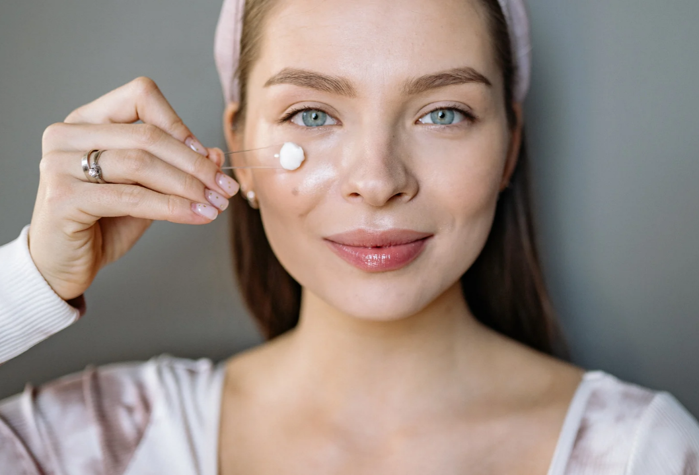
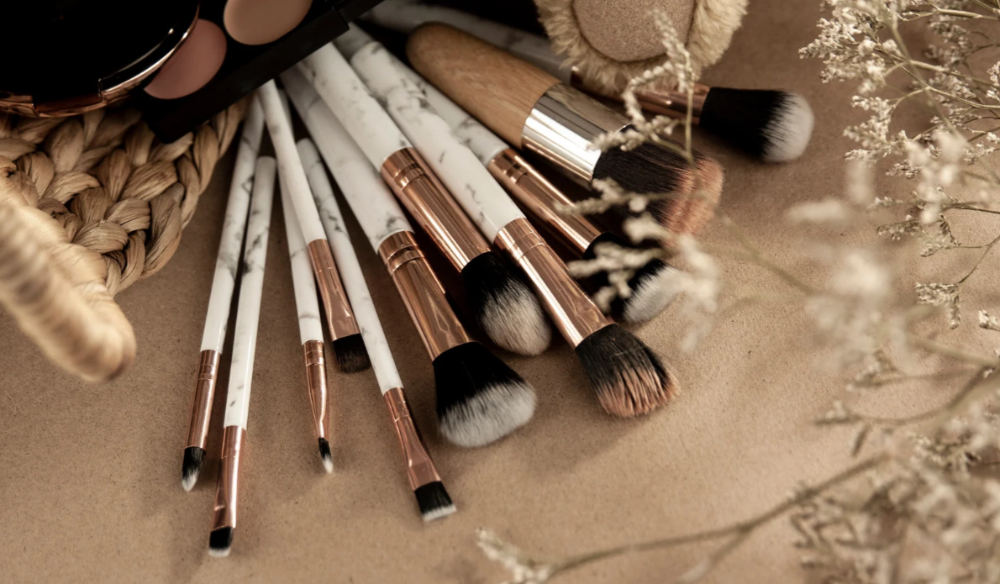

step by step to assemble a makeup kit
Makeup for beginners: step by step.

Saiba como montar um kit de maquiagem para iniciante:
O mundo da beleza é mesmo fascinante, mas se você ainda é iniciante, a grande variedade de produtos disponíveis no mercado pode causar algumas dúvidas. Mas, calma! Estamos aqui para te ajudar. Veja algumas dicas infalíveis para ser assertiva na hora de montar o seu nécessaire:
1 – Escolha os produtos certos
Monte um kit de maquiagem com os produtos adequados para o seu gosto e tipo de pele. Para garantir um bom acabamento, também é muito importante que eles tenham boa qualidade.
2 – Poucos e bons
Não é necessário comprar vários produtos de uma vez. Comece com itens principais como base, corretivo, blush, máscara de cílios e batom, por exemplo.
3 – Aprenda o básico
Confira as dicas e tutoriais aqui no blog da beauty makaup para aprender técnicas de maquiagem e pratique para aperfeiçoar suas habilidades. Conforme você for treinando, você consegue adicionar novos produtos e explorar outras técnicas mais avançadas, se assim desejar.
4 – Não esqueça do skincare
Para garantir um bom resultado com a maquiagem, é importante manter uma rotina de skincare e preparar a pele antes de aplicar os produtos.
O que precisa para montar um kit básico de maquiagem?

Um necessário de make para iniciantes deve ter itens certos para o seu tipo e tom de pele:
Confira alguns produtos importantes para ter no seu kit de maquiagem. Mas, vale lembrar que você pode adaptá-lo de acordo com as suas habilidades na make, ok?
Base
Há diversos tipos, acabamentos e coberturas de base, que podem ser líquidas, em pó ou cremosas, com acabamento matte ou luminoso, e ter baixa, médio ou alta cobertura, por exemplo.
Como iniciante, prefira uma base com cobertura média e que você possa usar tanto para um acabamento natural diário quanto para uma aparência de cobertura total.
Corretivo
Nos dias em que a pele precisa de uma ajuda extra e você precisa cobrir manchinhas e olheiras, use o corretivo para cobrí-las com facilidade. Procure uma fórmula leve, para evitar um aspecto de oleosidade ou uma camada muito grossa na pele.
Blush
Os blushes são essenciais para devolver a cor ao seu rosto após a aplicação da base e/ou do corretivo, seja ele cremoso ou em pó. Aplique nas maçãs do rosto e, se desejar, também pode usá-lo como produto multifuncional para corar os lábios ou como sombra.
Máscara de cílios
As máscaras de cílios são essenciais para arrematar o seu olhar em grande estilo, independente do efeito que você desejar: desde cílios esvoaçantes para o dia a dia a cílios longos e volumosos que pareçam postiços.
Batom
Um bom batom não pode faltar no seu nécessaire de maquiagem. Opte pelos tons mais clássicos, como os rosados ou vermelhos, e por produtos que também ofereçam tratamento para a pele dos lábios, como uma hidratação profunda e prolongada que deixa os lábios macios e com aparência saudável ao longo do dia.